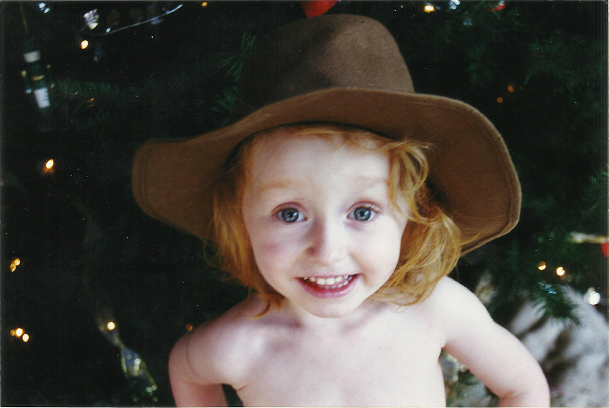

Avrie Allen is a Graphic Designer and current RISD Maharam Fellow pursuing her MFA at Rhode Island School of Design. Email me at avrie.world at gmail dot com
Site design and development by Avrie. All materials subject to ©CC BY-NC 4.0.
July 2025: This site is under construction, not all links are functinonal. Check back later, xoxo


- TEACHING
- Girlhood Zine Workshop, the Visiting Room Project

- Peer Tutor, RISD Arts & Language Center

- Research as Collaborative Practice *upcoming RISD Wintersession 2026
- CURATION
- RISD Graphic Design Biennial